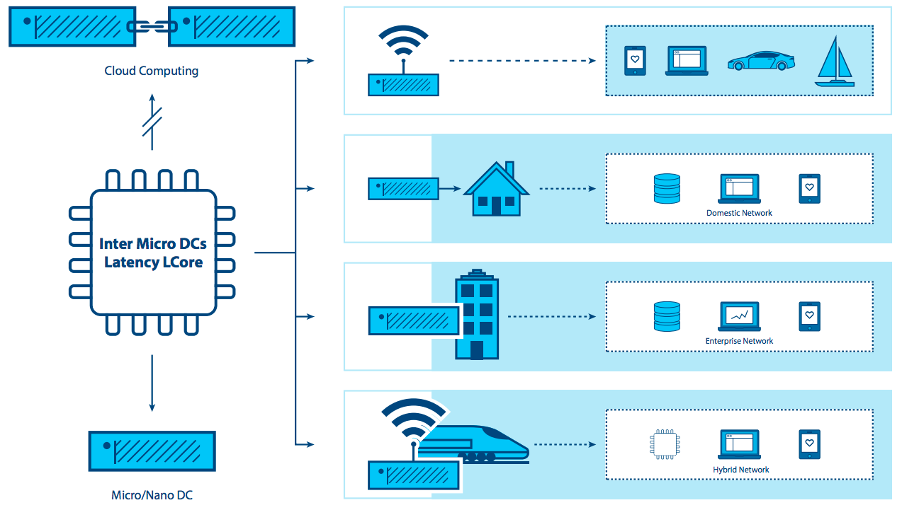
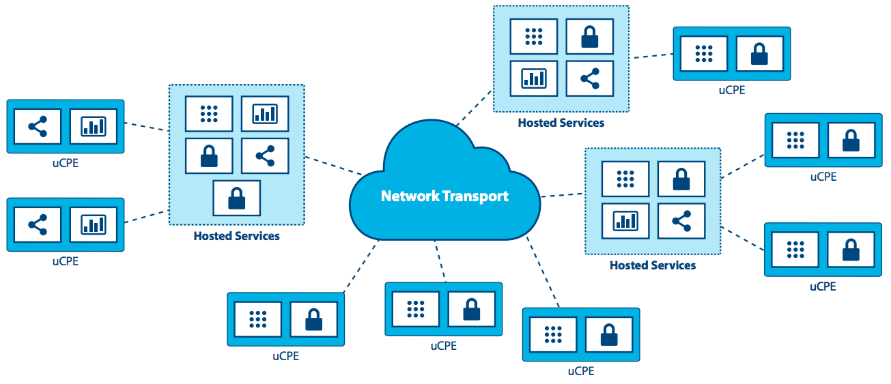

Edge Computing: Além do Data Center¶
INTRODUÇÃO¶
Por mais de uma década, a computação em nuvem centralizada foi considerada uma plataforma padrão de entrega de TI. Embora a computação em nuvem seja onipresente, necessidades emergentes e novas cargas de trabalho estão começando a expor suas limitações. Com sua visão fortemente centrada no data center, onde os recursos de computação e armazenamento são relativamente abundantes e centralizados, pouca ou nenhuma atenção jamais foi dada à otimização do hipervisor de suporte e à pegada da plataforma de gerenciamento. Poucos desenvolvedores de nuvem consideraram seriamente os requisitos necessários para suportar nós com recursos restritos, alcançáveis apenas em conexões de rede não confiáveis ou com largura de banda limitada, ou pensaram nas necessidades de aplicações que exigem largura de banda muito alta, baixa latência, ou capacidade computacional distribuída por vários sites.
Novas aplicações, serviços e cargas de trabalho demandam cada vez mais diferentes tipos de arquitetura, uma que é construída para suportar diretamente uma infraestrutura distribuída. Novos requerimentos para disponibilidade e capacidade de nuvem em sites remotos são necessários para suportar ambos os requisitos de hoje (análise de dados de varejo e serviços de rede) e inovações do amanhã (cidades inteligentes e RA - Realidade Aumentada/RV - Realidade Virtual). A maturidade, robustez, flexibilidade e simplicidade da nuvem agora precisam ser estendidas em vários sites e redes afim de lidar com demandas crescentes.
Recentemente empresas começaram a aplicar a administração simplificada e a flexibilidade das arquiteturas de computação em nuvem para infraestruturas distribuídas que abrangem vários sites e redes. As organizações tem uma necessidade emergente de ter recursos em nuvem entre redes WAN e de implementações cada vez menores na borda de rede. Ainda que essa abordagem seja recente, está ficando claro que muitos casos de uso e cenários emergentes se beneficiariam de arquiteturas distribuídas.
Nesse documento, exploramos essa necessidade emergente. Isso vem sendo chamado por alguns nomes: nuvem distribuída, computação em nuvem, 4ª geração de data centers, mas para os propósitos desse documento, vamos ficar com um termo facilmente entendido - cloud edge computing.
O grupo de computação de borda enxerga essa evolução da computação na nuvem como muito animadora, embora reconheçamos que a capacidade do OpenStack para suportar a nuvem de computação de borda está recente. Baseado no interesse inicial expressado pela comunidade no OpenStack Summit em Boston, realizou-se uma oficina de dois dias em Setembro de 2017 que reuniu mais de 200 usuários e desenvolvedores para iniciar o trabalho duro de definição de casos de uso relevantes e a consideração de ferramentas e arquiteturas necessárias para suportá-los. Provas dos conceito foram realizadas e a comunidade teve algumas implantações no local. O Grupo de computação de borda agora assumiu o desafio para descrever os requisitos fundamentais de um sistema totalmente funcional da infraestrutura de nuvem de computação de borda.
Nesse documento, pretendemos realizar algumas tarefas importantes:
- Cultivar a conversação sobre cloud edge computing, incluindo algumas definições básicas, estimulando o interesse e o engajamento da comunidade de código aberto.
- Guiar tanto a comunidade mais ampla de código aberto quanto a comunidade OpenStack no desenvolvimento de ferramentas e padrões necessários para ampla adoção.
- Explorar como as ferramentas atuais, padrões e arquiteturas podem precisar mudar para acomodar esse modelo de nuvem distribuída.
Existe muito trabalho a ser feito para atingir nossos objetivos, e damos boas-vindas e encorajamos toda a comunidade de código aberto para participar tanto do esforço, quanto da oportunidade de criação ou adaptação de ferramentas para atender os novos requisitos da nuvem Edge Computing.
O QUE É A NUVEM EDGE COMPUTING?¶
Vale ressaltar que muitas definições sobrepostas e, às vezes, conflitantes de edge computing existem - edge computing significa muitas coisas para muitas pessoas. Mas para nossos propósitos, a visão mais madura de edge computing é que ela está oferecendo a desenvolvedores de aplicações e provedores de serviço recursos de computação em nuvem, bem como um ambiente de serviço de TI na borda de uma rede.
O objetivo é entregar computação, armazenamento, e largura de banda muito mais próximos da entrada de dados e/ou dos usuários finais. Um ambiente Edge Computing é caracterizado por latência potencialmente alta entre todos os sites e largura de banda baixa e não confiável - juntamente com a entrega de serviços peculiares e possibilidades de funcionalidade de aplicação que não podem ser cumpridas com um pool de recursos de nuvem centralizado em centros de dados distantes. Ao mover algumas ou todas as funções de processamentos para mais perto do usuário final ou do ponto de coleta de dados, a nuvem Edge Computing pode mitigar os efeitos de sites amplamente distribuídos, minimizando os efeitos da latência nas aplicações.
A Edge computing suriu primeiro através da virtualização de serviços de rede sobre redes WAN, dando um passo longe do centro de dados. Os casos de uso iniciais foram impulsionados pelo desejo de alavancar uma plataforma que entregava a flexibilidade e ferramentas simples às quais os usuários de computação em nuvem se acostumaram.
À medida que surgem novas capacidades de Edge Computing, vemos um paradigma em mudança para a computação - um deles e que não é mais necessário construir um centro de dados centralizado. Em vez disso, para certas aplicações, a nuvem Edge Computing está tomando as lições da virtualização e da computação em nuvem e criando a capacidade de ter potencialmente milhares de nós distribuídos massivamente, que podem ser aplicados para diversos casos de uso, como por exemplo IoT industrial ou mesmo redes de monitoramento distantes para rastrear o uso de recursos hídricos em tempo real ao longo de milhares ou milhões de localidades.
Muitas capacidades de edge computing proprietárias e de código aberto já existem sem depender da nuvem distribuída - alguns fornecedores referem-se a isso como «dispositivo de ponta». Componentes dessa abordagem incluem elementos como gateways IoT ou appliances NFV. Mas cada vez mais, aplicações precisam da versatilidade de nuvem na borda, apesar das ferramentas e arquiteturas necessárias para construir uma infraestrutura de borda serem ainda prematuras. Nossa visão é que o mercado continuará tendo demandas de melhores capacidades para a nuvem edge computing.
As capacidades do Edge computing incluem, mas não estão limitadas a:
- Um paradigma de operação consistente entre infraestruturas diversas.
- A capacidade de executar em um ambiente massivamente distribuído (pense em milhares de localizações globais).
- A necessidade de entregar serviços de rede para clientes localizados em locais remotos distribuídos globalmente.
- Integração de aplicações, orquestração e requisitos de entrega de serviços.
- Limitações de hardware e restrições de custo.
- Conexões de internet intermitentes ou limitadas.
- Métodos para abordar aplicações com requisitos rigorosos de baixa latência (RA/RV , voz, e assim por diante).
- Geofencing e requisitos para manter dados locais confidenciais.
UMA EXPLORAÇÃO MAIS PROFUNDA DE CONSIDERAÇÕES DE EDGE COMPUTING¶
O «edge» em edge computing refere-se aos arredores de um domínio administrativo, o mais próximo possível de fontes de dados discretas ou dos usuários finais. Esse conceito se aplica a redes de telecomunicações, grandes companhias com pontos de presença distribuídos como o varejo, ou para outras aplicações, em particular, no contexto da Internet das Coisas.
{kind=link}
Uma das características do edge computing é que a aplicação é fortemente associada com a localização da borda. Para telecomunicações, «the edge» deveria referir-se ao ponto próximo ao usuário final mas controlado pelo provedor, potencialmente tendo alguns elementos de cargas de trabalho em execução nos dispositivos dos usuários finais. Para grandes companhias, «the edge» é o ponto onde a aplicação, serviço ou força de trabalho é usado (uma loja de varejo ou uma fábrica). Para os propósitos dessa definição, «the edge» não é um dispositivo final com capacidade extremamente limitada para suportar até mesmo uma arquitetura mínima de nuvem, como um dispositivo IoT ou de monitoramento. Essa é uma consideração importante, porque algumas discussões sobre edge computing não fazem essa distinção.
Edge computing é similar a data center computing no seguinte:
- Ela inclui recursos de computação, armazenamento e rede.
- Seus recursos podem ser compartilhados por vários usuários e várias aplicações.
- Ela se beneficia da virtualização e da abstração do pool de recursos.
- Ela se beneficia da capacidade de alavancar hardware de commodities.
- Utiliza APIs para suportar interoperabilidade.
Edge computing se diferencia de computação em grandes centros de dados no seguinte:
- Sites de borda estão o mais próximo possível dos usuários finais. Eles melhoram a experiência em alta latência e conexões instáveis.
- Pode requerer hardware especializado, tal como GPU/FPGA plataformas para funcionalidade RA/RV.
- Edge pode escalar para um grande número de sites, distribuídos em localidades distintas.
- Uma localização de um site de borda e a identidade dos links de acesso que ele termina são significantes. Uma aplicação que precisa rodar próxima ao seu usuário, precisa estar na parte certa da borda. É comum que a localização da aplicação seja importante na edge computing.
- O pool inteiro de sites pode ser considerado dinâmico. Devido às suas separações físicas, sites de borda serão, em alguns casos, conectados uns aos outros e ao núcleo com conexões WAN. Sites de borda entrarão e sairão do pool de infraestrutura ao longo do tempo.
- Os sites de borda são remotos e potencialmente não tripulados, e portanto devem ser administrados remotamente. As ferramentas precisam suportar o acesso de rede intermitente ao site.
- Edge computing suporta grandes diferenças no tamanho e escala do site, desde a escala do centro de dados até um único dispositivo.
- Sites de borda podem ter limitações de recursos; A adição de capacidade a um site existente é restrita devido a requisitos de energia ou espaço.
- Multi-tenancy em escala massiva é requerida para alguns casos de uso.
- O isolamento da edge computing das nuvens de centros de dados pode ser necessário para garantir que os compromissos no domínio da «nuvem externa» não possam impactar os serviços.
O conceito de edge computing deve cobrir tanto o site de borda (ou seja, computação, rede e infraestrutura de armazenamento), quanto as aplicações (cargas de trabalho) que rodam nele. Vale à pena ressaltar que qualquer aplicação em um ambiente de edge computing deveria potencialmente alavancar qualquer ou todas as capacidades providas pela nuvem—computação, armazenamento em bloco, armazenamento de objetos, rede virtual, máquina física, ou contêineres.
As características essenciais que definem e separam edge computing da computação em nuvem são:
- a capacidade de suportar um pool dinâmico de múltiplos sites potencialmente amplamente distribuídos,
- conexões de rede potencialmente não confiáveis, e
- a probabilidade de restrições de recursos difíceis de resolver em sites na rede.
EXPLORANDO CARACTERÍSTICAS E CASOS DE USO¶
Então, o que sabemos até agora sobre características de edge computing, casos de uso e cenários?
A necessidade de definição que impulsiona a nuvem edge computing é a necessidade de a entrega de serviços estar próxima de usuários ou de fontes de dados finais. Ambientes edge computing irão trabalhar em conjunto com a capacidade do núcleo, mas visando oferecer uma melhor experiência de usuário final, sem colocar demandas irracionais na conectividade com o núcleo. As melhorias resultam de:
- Redução da latência: A latência para o usuário final pode ser menor do que seria se a computação estivesse mais distante — fazendo, por exemplo, desktops remotos responsivos, ou AR bem sucedido , ou jogos melhorados.
- Mitigação dos limites de largura de banda: A habilidade para mover cargas de trabalho para mais próximo do usuário final ou pontos de coleta de dados, reduz o efeito do limite da largura de banda para o site. Isso é especialmente útil se o serviço que está sendo executado no nó de borda reduz a necessidade para transmitir grandes quantidades de dados para o núcleo para processamento, como é frequente o caso com cargas de trabalho IoT e NFV. Redução de dados e processamento local podem ser traduzidos tanto em aplicações mais responsivas quanto em redução do custo de transporte de dados em longa distância.
Mas existem escolhas conflitantes. Para entregar edge computing, é necessário aumentar consideravelmente o número de implantações. Isso institui um desafio significativo para difundir implantações edge. Se o gerenciamento de um única nuvem precisa de uma equipe de dez pessoas, Como uma organização pode lidar com centenas ou mesmo com milhares de pequenas nuvens? Alguns requisitos incluem:
- É necessária uniformidade de padrões e infraestrutura. Cada local deve ser semelhante; uma quantidade conhecida.
- A capacidade de gerenciamento precisa ser automatizada; implantação, substituição e quaisquer falhas recuperáveis devem ser simples e diretas.
- Planos simples e econômicos precisam ser definidos para quando o hardware falhar.
- Projetos locais tolerantes a falhas podem ser importantes, particularmente em ambientes que são remotos ou não acessíveis. Um infraestrutura de zero toque é desejável. Esta é uma questão que equilibra o custo de comprar e executar hardware redundante contra o custo de interrupções e reparos de emergência. As considerações incluem:
- Esses locais precisam ser autosuficientes?
- Se um local tiver uma falha, ninguém estará no local para corrigi-la e as peças sobressalentes locais são improváveis.
- Precisa tolerar falhas? Se precisa, quanto tempo será preciso até que alguém possa estar disponível para consertá-las? Duas horas, uma semana, um mês?
- A capacidade de manutenção precisa ser direta - técnicos não treinados realizam reparos e substituições manuais, enquanto um administrador remoto experiente restabelece ou mantém o software.
- Os projetos físicos podem precisar ser repensados completamente. A maioria dos ambientes edge computing não serão ideais—potência limitada, sujeira, umidade e vibrações devem ser considerados.
CASOS DE USO¶
Existem provavelmente dezenas de formas para categorizar casos de uso e esse documento é muito curto para prover uma lista exaustiva sobre isso. Mas aqui estão alguns exemplos para ajudar a clarear o pensamento e realçar oportunidades para colaboração.
Quatro categorias principais de requisitos de carga de trabalho que se beneficiam da arquitetura distribuída são: Análise, conformidade, segurança e NFV.
Coleta e Análise de Dados¶
IoT, onde dados frequentemente são coletados de uma grande rede de micro sites, é um exemplo de uma aplicação que se beneficia do modelo de computação de borda. Enviando massas de dados por conexões de rede geralmente limitadas para um mecanismo de análise localizado em um centro de dados é contraproducente; isso pode não ser responsivo o suficiente, poderia contribuir para uma latência excessiva e gastaria grande largura de banda. Como os dispositivos de borda também podem produzir terabytes de dados, aproximando-se a análise da fonte dos dados do dispositivo pode ter um melhor custo efetivo ao se enviar apenas pequenos lotes de informação condensada de volta para o sistema centralizador. Existe uma compensação aqui—balanceamento do custo de se transportar dados para o núcleo contra a perda de alguma informação.
Segurança¶
Infelizmente, à medida que os dispositivos de borda proliferam––incluindo aparelhos celulares e sensores de IoT––surgem novos vetores de ataques que aproveitam essa proliferação dos pontos de acesso. A computação de borda oferece a capacidade de mover elementos de segurança para próximo da origem do ataque, possibilitando maior desempenho das aplicações de segurança e aumentando o número de camadas que ajudam a defender o núcleo contra brechas e riscos.
Requisitos de conformidade¶
Compliance cobre uma ampla gama de requisitos, variando de geofencing, soberania de dados, e aplicação de direitos autorais. Restrição de acesso aos dados com base na geografia e nos limites políticos, limitação do fluxo de dados de acordo com as limitações de direitos autorais, e armazenando de dados em locais com regulações específicas são todos realizáveis e passíveis de imposição com uma infraestrutura de edge computing.
Virtualização de Funções de Rede (NFV)¶
Virtualização de Funções de Rede (NFV) é em sua essência o aplicativo de computação de borda por excelência porque fornece funcionalidade de infraestrutura. Operadoras de telecomunicações estão buscando transformar seus modelos de entrega de serviço através da execução de funções de rede virtual como parte de, ou em camadas em cima de, uma infraestrutura de computação de borda. Para maximizar a eficiência e minimizar custo/complexidade, a execução de NFV na infraestrutura de computação de borda faz sentido.
Tempo Real¶
Aplicações em tempo real, tal como RA/RV, carros conectados, telemedicina, Indústria de internet tátil 4.0 e cidades inteligentes, são incapazes de tolerar mais que uns poucos milissegundos de latência e podem ser extremamente sensíveis a variações. Com um exemplo, carros conectados requerem baixa latência e alta largura de banda, e dependem da computação e armazenamento de cache próximo ao usuário, fazendo da capacidade de borda uma necessidade. Em vários cenários, particularmente onde a automação de circuitos fechados é utilizada para manter alta disponibilidade, tempos de resposta em dezenas de milissegundos são necessários, e não podem ser atingidos sem uma infraestrutura de computação de borda.
Imersivo¶
Computação de borda expande a capacidade de largura de banda, desbloqueando o potencial das novas aplicações imersivas. Algumas delas incluem RA/RV, vídeo 4K, e imagens 360º para verticais como as empresas de cuidado com a saúde. Cache e otimização de conteúdo na borda já estão se tornando necessidades, uma vez que protocolos como o TCP não respondem bem às mudanças repentinas no tráfego de rede via rádio. A infraestrutura de computação de borda, aliada ao acesso em tempo real à informação de rádio/rede podem reduzir os atrasos em vídeo em até 20% durante o pico de horas de visualização, e pode também variar a taxa de alimentação de bits de vídeo com base nas condições de rádio.
Eficiência da rede¶
Muitas aplicações não são sensíveis à latência e não requerem grandes quantidades de computação ou capacidade de armazenamento nas proximidades, então elas poderiam teoricamente rodar em uma nuvem centralizada, mas os requisitos de largura de banda e/ou computação ainda podem fazer com que a computação de borda seja uma abordagem mais eficiente. Algumas dessas cargas de trabalho são comuns hoje, incluindo vigilâncias de vídeo e gateways de IoT, enquanto outras, incluindo reconhecimento facial e reconhecimento de placas de veículos, são capacidades emergentes. Com muitos desses, a infraestrutura de computação de borda não somente reduz requisitos de largura de banda, mas pode também fornecer uma plataforma para funções que habilitam o valor de uma aplicação—por exemplo, detecção de movimento por vigilância de vídeo e reconhecimento de ameaças. Em várias dessas aplicações, 90% dos dados é rotineiro e irrelevante, então enviar isso para uma nuvem centralizada é proibitivamente caro e um desperdício de largura de banda de rede, muitas vezes escassa. Faz mais sentido classificar os dados na borda, buscando por anomalias e alterações, e somente enviar os dados que interessam.
Operações de sites autônomos e independentes¶
Muitos ambientes, ainda hoje, possuem conexão limitada, não confiável ou imprevisíveis. Esses poderiam incluir transporte (avião, ônibus, navios), operações de mineração (plataformas de petróleo, tubulações, minas), infraestrutura de energia (fazendas de vento, usinas de energia solar), e até ambientes que deveriam tipicamente possuir boa conectividade, como lojas. A computação de borda suporta perfeitamente cada um desses ambientes permitindo que os sites permaneçam semi autônomos e funcionais quando precisam ou quando a conexão de internet não está estável. O melhor exemplo para essa abordagem é a necessidade dos locais de varejo de manter seus sistemas de pontos de vendas (PDV), mesmo quando há uma falta temporária de conexão com a internet .
Privacidade¶
As empresas podem ter necessidades de capacidade de computação de borda dependendo das cargas de trabalho, limites de conectividade e privacidade. Por exemplo, aplicações médicas que precisam tornar anônimas as informações de saúde pessoal (ISP) antes de enviar para a nuvem deveriam fazer isso utilizando uma infraestrutura de computação de borda.
Outra forma de examinar os requisitos que se beneficiariam com a computação de borda é pelo tipo de empresa que os implantariam. Aplicações de operador são cargas de trabalho inseridas na infraestrutura de computação de borda que são construídas e gerenciadas por operadores—companhias de telecomunicações, por exemplo. Aplicações de terceiros são construídas por organizações para rodar em uma infraestrutura de borda existente, afim de alavancar a infraestrutura de computação de borda de outros. Vale ressaltar que quaisquer aplicações deveriam alavancar quaisquer ou todas as capacidades providas por uma nuvem—computação, armazenamento de bloco, armazenamento de objeto, rede virtual, máquina física, ou contêineres.
CENÁRIOS¶
A característica básica do paradigma da computação de borda é que a infraestrutura é localizada próxima ao usuário final, que a escala de distribuição do site é alta e que os nós de borda são conectados pelas conexões de rede WAN. Examinando alguns cenários em uma profundidade maior nos ajuda a avaliar as capacidades atuais que mapeiam para o caso de uso, bem como destaca as fraquezas e oportunidades para melhoramento.
Varejo/finanças/localização remota «nuvem em uma caixa»: Infraestrutura de computação de nuvem que suporta uma suíte de aplicações customizadas para uma empresa específica ou indústria vertical. Frequentemente usada por empresas, a infraestrutura de computação de borda, em adição a uma infraestrutura distribuída, para reduzir o perfil de hardware, padronizar implantações em muitos sites, entregar maior flexibilidade para substituir aplicações localizadas na borda (e para ter a mesma aplicação rodando uniformemente em todos os nós independetemente do hardware), impulsionar resiliência, e abordar preocupações sobre conexões WAN intermitentes. Cache de conteúdo ou fornecimento de computação, armazenamento e rede para aplicações autônomas são usos óbvios para computação de borda em cenários com conectividade limitada.
Conectividade móvel: Redes móveis/sem fio são provavelmente os elementos de ambiente comuns para nuvem de computação de borda, visto que as redes móveis continuarão sendo caracterizadas por larguras de banda limitadas e imprevisíveis, ao menos até que a 5G esteja amplamente disponível. Aplicações tais como a realidade aumentada para reparos remotos e telemedicina, dispositivos de IoT para utilitário de captura de dados (água, gás, gerenciamento de instalações), inventário, cadeia de suprimentos e soluções de transporte, cidades inteligentes, estradas inteligentes e aplicações de segurança remota estarão todas confiando em uma rede móvel em maor ou menor grau. Todas elas se beneficiarão da capacidade da computação de borda de mover cargas de trabalho para próximo do usuário final.

Rede-como-um-Serviço (NaaS): Vindo da necessidade de entregar uma experiência de aplicação de serviço de rede idêntica em ambientes radicalmente diferentes, o caso de uso NaaS requer tanto uma pequena pegada de sua plataforma distribuída nas bordas, como ferramentas de gerenciamento fortemente centralizadas que atravessam conexões de rede WAN não confiáveis ou limitadas em apoio aos serviços fora da borda. As principais características desse cenário são: pegada pequena de hardware, movimentação (mudando as conexões de rede) e mudando constantemente as cargas de trabalho, localizações híbridas de dados e aplicações. Isso é um dos casos que necessitam de infraestrutura para suportar micro nós—pequenas doses de computação em pacotes não tradicionais (nem todos os racks de 19pol em um centro de dados resfriado). NaaS irá requerer suporte para milhares ou dezenas de milhares de nós de borda e deve suportar arquiteturas de malhas e/ou hierárquicas, bem como sites sob demanda que possam subir quando necessário e desligar quando estiverem concluídos. APIs e GUIs terão que mudar para refletir que esses grandes números de nós de computação terão diferentes locais em vez de estarem presentes no mesmo centro de dados.
Equipamentos Locais Universais para Clientes (uCPE): Esse cenário, já sendo implementado atualmente, exige suporte para pegada de hardware do tamanho do appliance e é caracterizado pelas conexões de rede limitadas com cargas de trabalho geralmente estáveis que requerem alta disponibilidade. Isso também requer um método para suportar localizações híbridas de dados e aplicações atravessando centenas ou milhares de nós e a expansão das implementações de uCPE existentes será um requisito emergente.
Isso é particularmente aplicável para aplicações NFV onde diferentes sites poderiam precisar de diferentes conjuntos de aplicações em cadeia ou sites com um conjunto diferente de aplicações requeridas que ainda precisa trabalhar em união. Arquitetura de malha ou hierárquica precisaria ser suportada com capacidade localizada e a necessidade para armazenar e encaminhar o processamento de dados devido as conexões de rede intermitentes. Auto cura e autoadministração combinadas com a habilidade para administrar remotamente um nó são necessárias.
Comunicação via Satélite (SATCOM): Esse cenário é caracterizado pelos numerosos dispositivos terminais capazes, frequentemente distribuídos para condições mais remotas e severas. Ao mesmo tempo, faz sentido utilizar essas plataformas distribuídas para serviços de hospedagem, especialmente considerando a latência extremamente alta, largura de banda limitada e custo de comunicação por satélite. Exemplos específicos de tais casos de uso devem incluir embarcações (de barcos de pesca a navios tanques), aviões de guerra, plataformas de petróleo, operações de mineração ou infraestrutura de grau militar.

{kind=link}
DESAFIOS¶
Embora haja abundância de exemplos de implementações de borda já em progresso ao redor do mundo, a adoção generalizada requer novas formas de pensamento para resolver desafios e limitações emergentes e já existentes.
Nós estabelecemos que a plataforma de computação de borda tem que ser, por design, muito mais tolerante a falhas e robusta que uma nuvem tradicional de centro de dados centralizado, em ambos os termos de hardware assim bem como nos serviços de plataforma que suportam o ciclo de vida da aplicação. Nós não podemos assumir que tais casos de uso de borda terão a manutenção e apoio a instalação que infraestrutura de centro de dados padrões possuem. Provisionamento zero-toque, automação, e orquestração autônoma em toda infraestrutura e pilhas de plataforma são cruciais nesses cenários.
Mas existem outros desafios que precisam ser levados em consideração.
Para um, sistemas de gerenciamento de recurso de borda devem entregar um conjunto de mecanismos de alto nível cuja montagem resulta em um sistema capaz de operar e usando uma infraestrutura IaaS geodistribuída confiando em interconexões WAN. Em outras palavras, o desafio é revisar (e estender quando necessário) serviços de núcleo IaaS a fim de lidar com especificações de borda acima especificadas—desconexões de rede/largura de banda, capacidades limitadas em termos de computação e armazenamento, implantações não tripuladas e assim por diante.
Algumas necessidades previsíveis incluem:
- Um gerenciador em máquina virtual/contêiner/máquina física responsável por gerenciar o ciclo de vida da máquina/contêiner (configuração, agendamento, implantação, suspender/reassumir, e desligar).
- Um gerenciador de imagem responsável por arquivos de modelos (conhecidos como imagens de máquina virtual/contêiner).
- Um gerenciador de rede responsável por fornecer conectividade para a infraestrutura: redes virtuais e acesso externo para usuários.
- Um gerenciador de armazenamento, fornecendo serviços de armazenamento para aplicações de borda.
- Ferramentas administrativas, fornecendo interfaces de usuário para operar e usar a infraestrutura dispersa.
Essas necessidades são relativamente óbvias e podem provavelmente ser atendidas alavancando e adaptando projetos existentes. Mas outras necessidades da computação de borda são mais desafiadoras. Estas incluem, mas não estão limitadas a:
- Abordagem da latência de armazenamento em cima de conexões WAN.
- Segurança reforçada na borda—monitoração da integridade física e de aplicação de cada site, com a capacidade de ativar correções anônimas quando necessário.
- Monitoração da utilização dos recursos de todos os nós simultaneamente.
- Ferramentas de orquestração que gerenciam e coordenam muitos sites e cargas de trabalho de borda, potencialmente conduzindo para um plano de controle emparelhado ou “self-organizing edge.”
- Orquestração de uma federação de plataformas de borda (ou nuvem de nuvens) tem que ser explorada e introduzida nos serviços centrais de IaaS.
- Operações automatizadas de ativação/desativação, incluindo implantação inicial de software e atualizações dos componentes de sistema de gerenciamento de recursos.
- Realocação automatizada de dados e cargas de trabalho—balanceamento de carga entre hardware geograficamente distribuído.
- Alguma forma de sincronização de propagação do estado abstrato deve ser necessária no «núcleo» da infraestrutura para lidar com links de rede descontínuos.
- Novas formas de lidar com problemas de particionamento de rede devido à limitação de conectividade—lidando com desconexões curtas e longas.
- Ferramentas para gerenciar ciclos de vida de aplicação de borda, incluindo:
- A definição de restrições avançadas de atribuição para lidar com os requisitos de latência dos componentes do aplicativo.
- O provisionamento/agendamento de aplicativos para satisfazer os requisitos de atribuição (atribuição inicial).
- Realocações de dados e cargas de trabalho de acordo com eventos internos/externos (casos de uso de mobilidade, falhas, considerações de desempenho, etc.).
- Consciência de localização de integração: nem todas as implantações de borda exigirão o mesmo aplicativo no mesmo momento. A localização e a conscientização da demanda são uma necessidade provável.
- Hardware discreto com recursos limitados e a capacidade limitada de expansão no site remoto precisam ser levados em consideração ao projetar a arquitetura geral no nível macro e das ferramentas administrativas. O conceito de ser capaz de capturar recursos remotos sob demanda de outros sites, ou vizinhanças em uma rede de malha ou de elementos centrais em uma rede hierárquica, significa que as flutuações na demanda local podem ser atendidas sem ineficiência em implementações de hardware.
CONCLUSÃO E CONVITE À AÇÃO¶
Computação de borda não é e não deve ser limitada somente a componentes e arquiteturas do OpenStack, mas há algumas razões pelas quais o Openstack é particularmente atraente como uma plataforma para computação de borda. O Grupo de computação de borda está pedindo que a comunidade de código aberto inicie a exploração desses desafios e possibilidades. Reconhecemos que existe trabalho a ser feito para atingir nossos objetivos de criar as ferramentas para atender a esses requisitos. Damos boas-vindas e encorajamos toda a comunidade de código aberto a entrar nessa oportunidade para definir e desenvolver a edge computing. Você pode encontrar mais informações sobre as atividades do grupo na página web do OpenStack de computação de borda.
Visite openstack.org para iniciar com o OpenStack ou clique nesses recursos para mais informações:
| Recursos | Visão geral |
|---|---|
| Página web do OpenStack Edge Computing | Um lugar central para encontrar ponteiros para os vídeos de eventos anteriores, artigos e conteúdo adicional sobre edge computing. |
| Lista de discussão OpenStack Edge Computing | Um fórum para discussões relativas à borda e à edge computing (não exclusivamente para OpenStack) e para receber informações sobre atividades em andamento e convites para ação. |
| OpenStack Summit | Uma conferência de quatro dias para líderes empresariais de TI, operadores de nuvem e desenvolvedores cobrindo o cenário de infraestrutura aberta. Procure trilhas e sessões relacionadas a edge computing nos próximos Summits. |
| Internet Relay Chat (IRC; https://wiki.openstack.org/wiki/IRC) | Fog/Edge/Nuvens Distribuidas Maciçamente (FEMDC) As reuniões SIG IRC (on-line) são realizadas a cada duas semanas (semanas ímpares), 15:00 UTC na quarta-feira, no canal IRC # openstack-meeting. |
| Eventos de OpenStack (https://www.openstack.org/community/events/) | Agenda global de eventos incluindo os populares OpenStack Summits e os regionais OpenStack Days. |
| OpenStack Marketplace (https://www.openstack.org/marketplace/) | Um ponto de parada para o ecossistema global qualificado de distribuições, drivers, treinamento, serviços e muito mais. |
| Documentação completa do OpenStack (https://docs.openstack.org/) | Índice para toda a documentação, para todas as regras e passos para planejamento e operação de uma nuvem OpenStack. |
| Bem-vindo à comunidade! (https://www.openstack.org/community/) | Entre em listas de discussões e canais IRC, encontre empregos e eventos, acesse o código fonte e mais. |
| Grupos de usuários (https://groups.openstack.org/) | Encontre um grupo de usuários perto de você, participe de meetups e hackathons—ou organize um! |